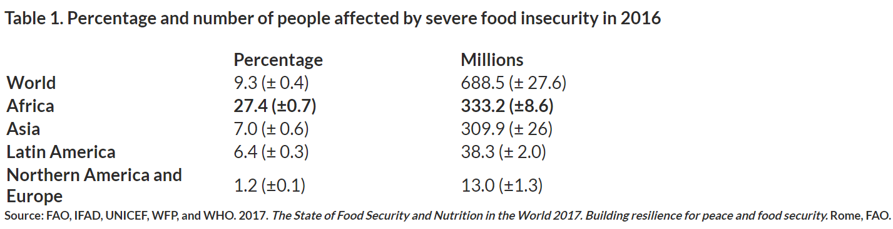
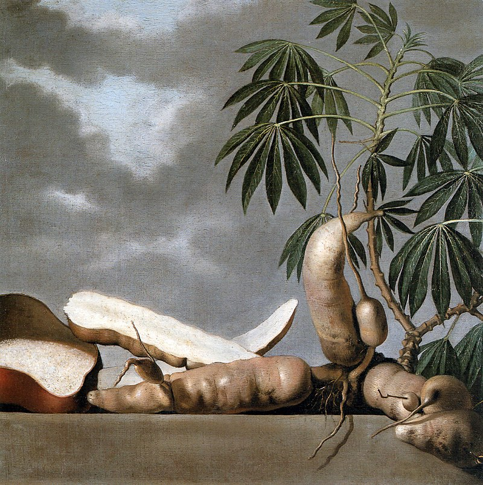
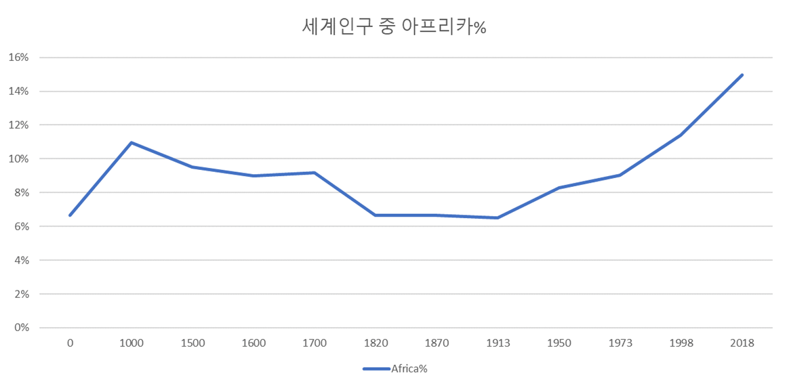
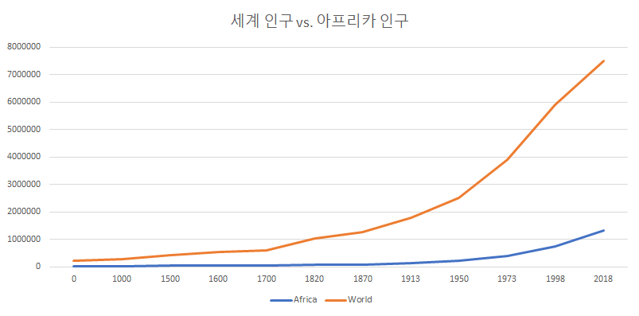
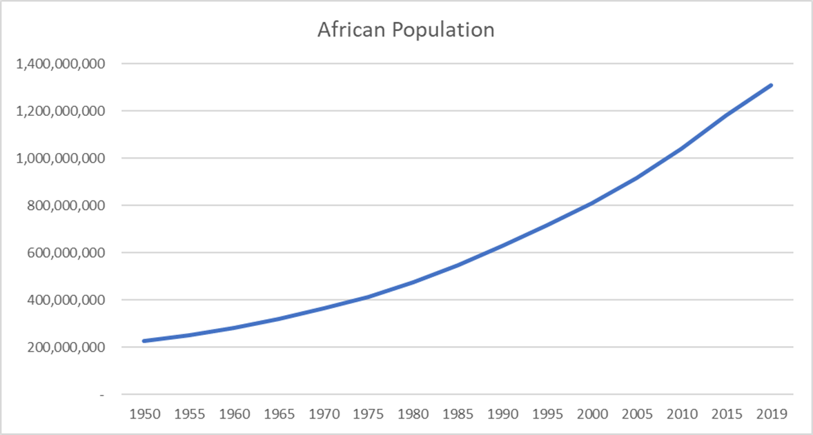
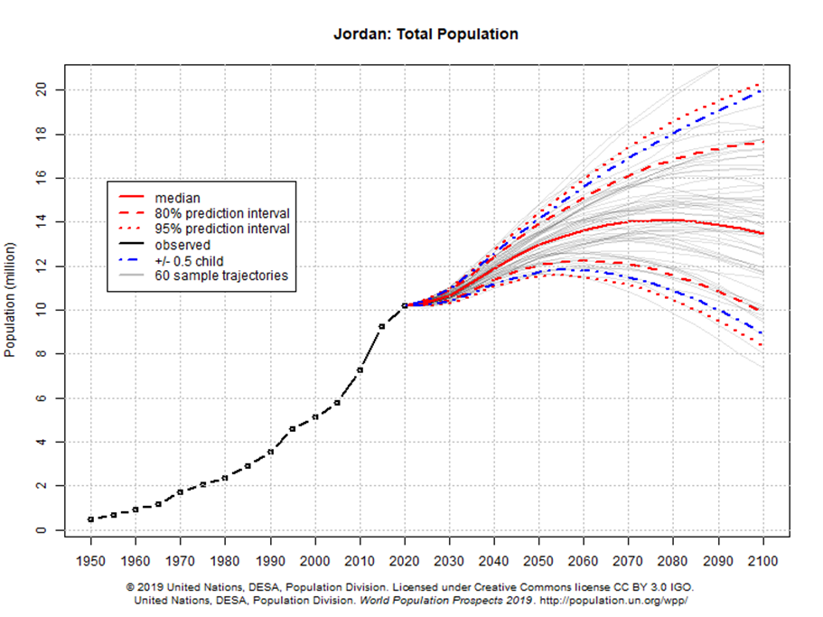
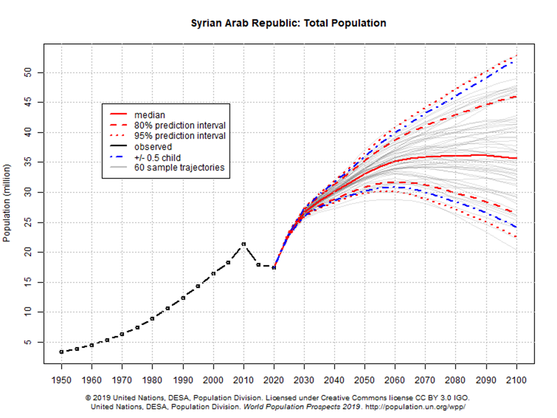
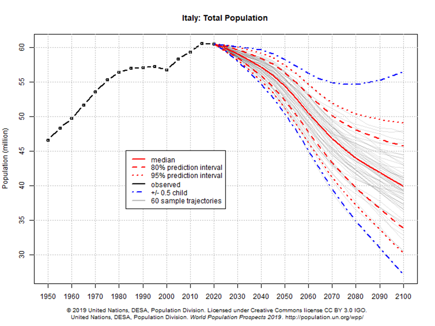
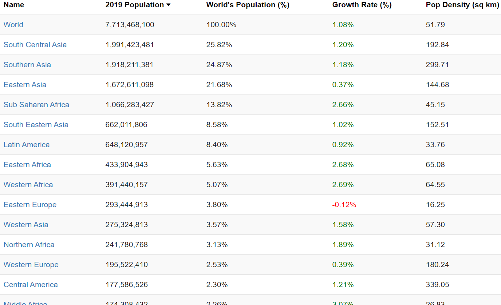
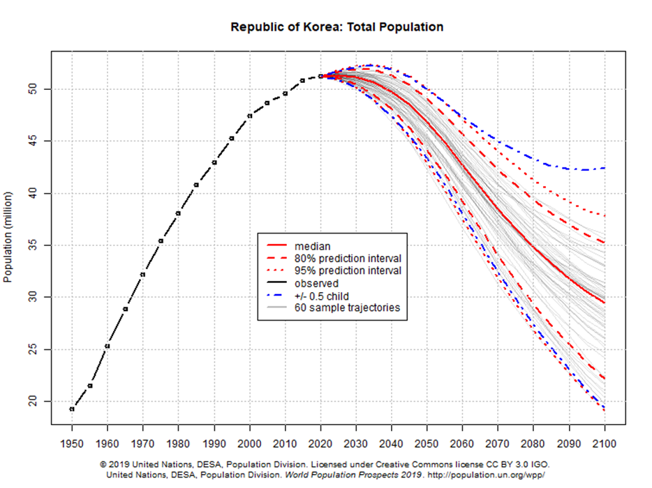

아프리카의 기아는 무엇 때문인가 ?
게시: 2019-09-26T06:30:50+09:00
저는 아주 예전부터 궁금한 것이 있었습니다. 왜 아프리카 사람들은 저토록 기아에 시달리는가 하는 것입니다. 알고보면 아프리카 일부 지역이 한시적으로 굶주리는 것 뿐, 아프리카가 기아에 시달리는 생지옥이라는 이미지는 구호단체들이 더 많은 기부금을 노리고 만들어낸 허상이라는 이야기는 들었습니다만, 그래도 전체적으로 아프리카가 기아에 시달리는 지역이라는 것은 맞는 말인 모양입니다. 특히 제가 궁금했던 것은, 사람이 살기에 훨씬 척박한 지역인 사막 지대나 북극 인근 지역에서는 저런 빈곤이 자주 발생하지 않는데, 왜 유독 아프리카에서만 저렇게 기아가 자주 발생하느냐 하는 것이었습니다.

제가 어설프게 생각한 것은 이 모든 것이 결국 유럽인들의 아프리카 식민지화 때문이라는 것이었습니다. 원래 사막이든 고원이든 모든 토지는 먹여살릴 인구 수가 정해져있는데, 유럽인들이 아프리카를 식민지화하면서 노동력 착취를 위해 아프리카가 먹여살릴 수 있는 것 이상으로 인구 수를 늘려놓은 것이 가장 큰 원인이라는 생각이었지요. 가령 인도 등 다른 곡창지대 식민지에서 실어오는 옥수수나 카사바로 식량을 공급하면서 노동력을 키워 아프리카의 광물 자원을 채취한다던가 커피 농사를 짓게 한다든가 하는 식으로요. 그러다가 식민지배가 끝나버리면서 늘어난 인구를 부양할 곡물 공급은 나몰라라 한 채로 무책임하게 철수해버린 것이 근본 문제라고 생각했습니다.
그러나 한번도 그런 내용에 대해 제대로 찾아본 적은 없어서 궁금증도 해소할 겸 검색을 해봤습니다. 그런데 대부분의 자료들이 지목하는 것은 아래와 같은 것들이었습니다. - 사회 인프라 미비 - 빈곤 - 분쟁 - 기후 변화
이 외에 AIDS 등 질병의 창궐을 이유로 뽑기도 하고, 심지어 남녀 불평등까지 문제의 원인으로 지목한 기관까지 있었습니다. (이유는 제가 보기에도 별로 설득력이 없어서 여기에 옮겨적지 않았습니다.) 그러나 어느 기관에서도 유럽의 식민 지배를 이유의 원인으로 뽑은 자료는 없었습니다. 어떻게 생각하면 그런 분석 기관들이 모조리 미국 및 유럽 기관들이니까 스스로를 비난하는 일은 안 하는 것일 수도 있다고 저는 생각했습니다.
(미리 말씀드리지만 유럽의 아프리카 식민 지배가 아프리카에 좋은 영향을 주었다던가 유럽은 죄가 없다라는 이야기는 결코 아닙니다. 적지 않은 유럽 연구자들이 유럽 제국주의가 아프리카에 끼친 악영향에 대해 논의하고 있습니다. https://www.theguardian.com/global-development/2012/oct/22/resource-extraction-colonialism-legacy-poor-countries )
저는 나름대로 혼자 생각해낸 제 얼치기 이론이 맞다면, 유럽이 아프리카를 식민 지배했던 19세기~20세기에 아프리카의 인구가 급증했을 것이라고 생각했습니다. 특히 전에 어쩌다 본 인포그래픽에서, 근대 이전에는 아프리카의 인구수가 유럽 인구수보다 적었는데, 이젠 유럽 인구수보다 아프리카의 인구수가 거의 2배 많다는 것을 생각해보면 제 생각이 맞다고 생각했습니다.
그래서 아프리카의 인구 추이를 찾아봤는데, 결론부터 말씀드리면 제 생각은 틀린 것 같더군요. 아프리카에 기아가 발생하는 이유는 사회 인프라가 부족하고 빈곤한데다, 전쟁이 잦고 기후 변화의 문제가 심각하기 때문이라고 저도 생각하게 되었습니다. 먼저, 아프리카의 인구는 유럽의 침탈 때문에 오히려 늘지 못했습니다. 유럽인의 침략 이전에도, 사하라 이남의 아프리카에 철기 문명이 도입되면서 농산물 생산이 늘어난 결과로 인구가 늘어나고 있었습니다. 또 아프리카에서 주식으로 많이 애용되는 카사바(cassava)는 남미가 원산지로서 16세기 경 포르투갈에 의해 아프리카에 옥수수와 함께 도입되었는데, 제 생각대로라면 이때 아프리카 인구가 폭발적으로 늘었어야 하지만 실제로는 나머지 전세계에서 인구가 늘어날 때 아프리카의 인구는 정체되어 있었습니다.

(17세기 네덜란드 화가의 카사바 정물화입니다. 카사바는 건조한 지대에서도 매우 잘 자라는 대표적 구황 작물이자, 옥수수와 함께 아프리카에서 주식으로 많이 이용하는 기초식품입니다.)
(카사바는 전분이 풍부한 뿌리 채소입니다. 왼쪽이 카사바를 빻아 만든 대표적인 아프리카 음식인 푸푸(fufu)입니다.)
이유는 유럽인들이 주도한 노예 무역 때문이었습니다. 워낙 많은 아프리카인들을 잡아갔고, 또 팔아먹을 노예를 잡아들이느라 흑인 왕국들끼리 벌인 전쟁 때문이었답니다. 그러다 19세기 이후 노예 무역이 금지되면서 다시 아프리카 인구가 늘어나기 시작했고, 제1차 세계대전 이후부터 증가세가 두드러졌습니다. 그러니까 아프리카 인구가 증가한 것은 유럽의 식민 지배 시절이 아니라 해방 이후였던 것입니다. 특히 인구 증가 추이는 1970년대 이후 더 가속화되었습니다.
 
사실 인구 급증이 아프리카의 문제이긴 한 것 같습니다. 1950년대부터 지금까지 무려 6배가 넘게 증가했으니까요. 그러니까 무절제한 임신과 출산이 아프리카 비극의 원인인 것일까요 ?

글쎄요, 인구 급증이 문제이긴 한데, 아프리카만 인구가 늘어난 것도 아닙니다. 제가 아프리카와 비교했던 건조 지대인 요르단과 시리아도 같은 기간 동안 인구가 그것 이상으로 늘었습니다. 시리아는 내전 때문에 인구가 급감하긴 했지만, 그 외에는 요르단이나 시리아에 기아가 있었다는 이야기는 못 들었습니다. 결국 따지고 보면 전세계에서 인구는 늘었습니다.
  
(이탈리아의 90년대에는 대체 무슨 일이 있었던 것일까요 ?)
다만 타지역은 늘어난 인구를 부양할 수 있을 정도로 경제도 발전했고, 아프리카는 그러지 못했다는 것이 이 모든 비극의 근본 원인입니다. 그런 와중에도 아프리카의 인구 증가율이 다른 지역을 압도할 정도로 높다는 것도 큰 문제입니다.
UN 자료에 따르면 아프리카의 인구 증가율은 나머지 전세계보다 88% 더 높습니다. 전세계적으로는 여성 1인당 2.5명의 자녀를 낳는데, 아프리카에서는 4.7명입니다. 니제르(Niger)의 경우 1인당 GDP가 하루에 1달러 이하 수준이지만, 여성 한명이 평생 가지는 아이의 수는 평균 7명이라고 하니까, 굉장히 높은 편입니다. 아프리카에서는 가족 계획 교육이 그렇게 활발히 진행되고 있지는 않다고 합니다.

명확한 이유는 잘 모르겠고 또 그런 경향이 일반적인 것도 아니지만, 사회가 발전하면서 교육 수준이 높아질 수록 출산률이 떨어지는 경향이 있는 것 같습니다. 가령 서유럽이나 동아시아는 인구 증가율이 매우 낮은데, 대신 생산성은 좋은 편입니다. 가디언지에 따르면 그렇게 아이를 적게 출산하는 대신 그 아이에게 집중적인 교육을 시키기 때문에 장기적인 측면에서 보면 생산성이 좋아진다고 합니다. 특히 교육 수준이 높은 여성일 수록 피임을 할 가능성이 많아진다는 것도 언급하고 있습니다.
인구가 늘어야 노동력도 풍부해지고 시장도 커지며, 그래야 기업들도 발전하고 국가로서도 세수가 늘어나니까 경제적인 측면에서는 인구 증가가 꼭 필효합니다. 그러나 지구가 더 커지는 것은 아니니까, 언제까지고 인구가 늘어날 수는 없습니다. 우리나라도 이제 인구 증가세가 확연히 꺾이고 아예 멸종으로 치닫는다고 걱정하고 있습니다만, 우리 사회의 젊은이들이 아이를 낳지 않는 것은 다 나름대로의 이유가 있습니다. 국가와 사회를 위해서 젊은이들에게 무조건 애를 더 낳으라고 강요할 수는 없습니다. 이젠 늘어나지 않는 인구를 억지로 늘일 생각보다는 줄어드는 인구에 맞춰 어떻게 우리 사회를 적응시켜 나가야 하는지 연구해보는 것이 더 낫지 않을까 합니다.

Source : https://www.worldhunger.org/africa-hunger-poverty-facts-2018/ https://borgenproject.org/causes-hunger-africa/ https://www.sos-usa.org/about-us/where-we-work/africa/hunger-in-africa https://www.theguardian.com/global-development-professionals-network/2016/jan/11/population-growth-in-africa-grasping-the-scale-of-the-challenge https://population.un.org/wpp/Graphs/ https://www.ncbi.nlm.nih.gov/pubmed/12159345 https://en.wikipedia.org/wiki/Demographics_of_Africa http://worldpopulationreview.com http://www.fao.org/3/a0154e/A0154E02.htm